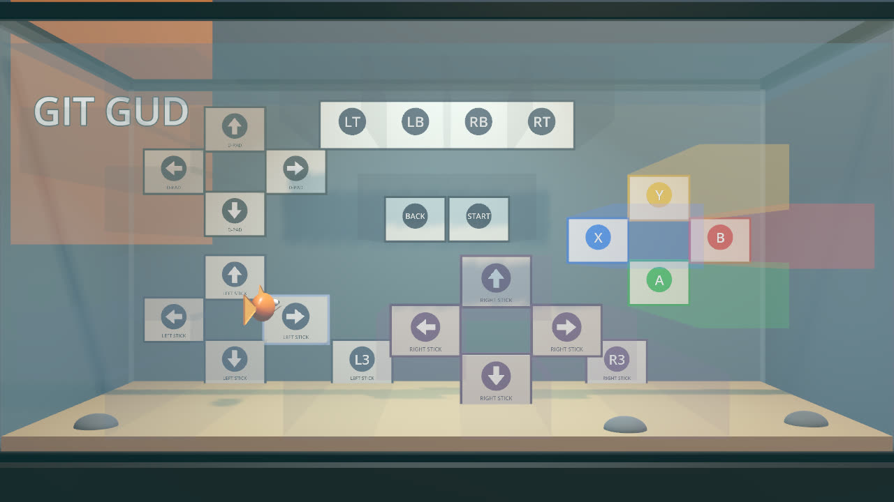
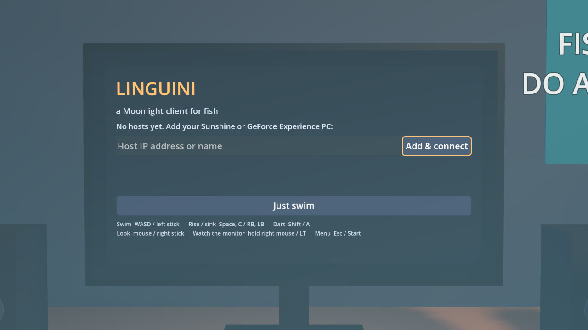
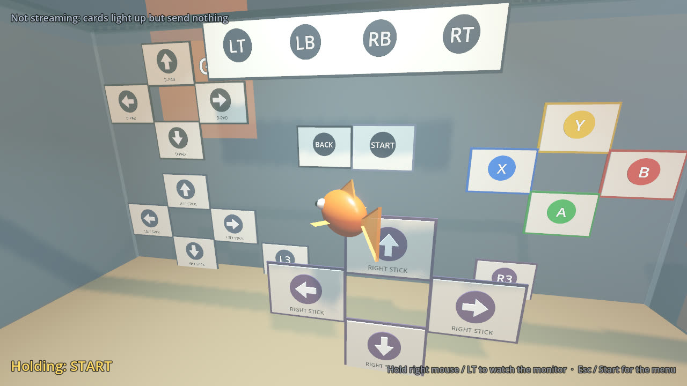
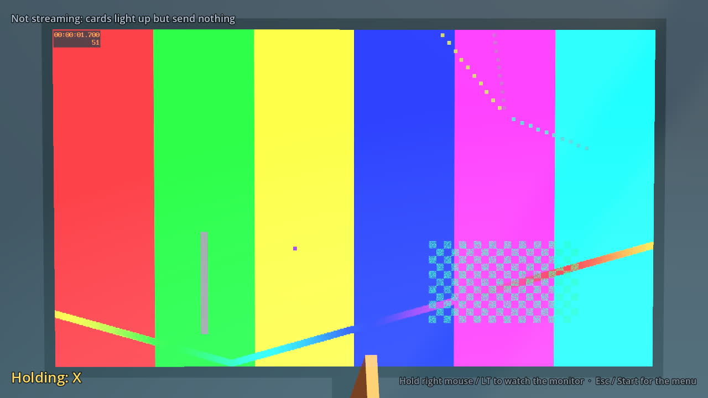

A Moonlight client
You are the fish.
Linguini streams games from your Sunshine or GeForce Experience PC to a monitor across a streamer's bedroom. You live in the fish tank. Swim in front of a flash card and the game feels the button press.
Version {{version}} · {{platforms}}

How it works
-

1 Pair on the monitor
The menus live on the computer monitor in the room. Add your host, enter the PIN in Sunshine, and pick a game.
-

2 Swim like a fish
Real Fishy Movement™ turns your input into what the fish wants to do, not where it goes. It arcs through turns, thrusts in tail beats, and drifts when you let go.
-

3 Watch through the glass
The game only plays on the monitor across the room. Hold the gaze button and the camera looks past the fish, through the glass, at the screen.
24 flash cards, one whole controller
Face buttons, D-pad, both sticks, bumpers, triggers, Start, Back and stick clicks. A card holds its button for as long as the fish stays in front of it. Hover between two stick cards for a diagonal.
- A
- B
- X
- Y
- LB
- RB
- LT
- RT
- L ↑
- L ↓
- L ←
- L →
- R ↑
- R ↓
- R ←
- R →
- D ↑
- D ↓
- D ←
- D →
- START
- BACK
- L3
- R3
Controls
Your keyboard and gamepad only move the fish. The game on your PC only gets what the flash cards send.
| Action | Keyboard & mouse | Gamepad |
|---|---|---|
| Swim | WASD | Left stick |
| Rise / sink | Space / C | RB / LB |
| Dart | Shift | A |
| Look around | Mouse | Right stick |
| Watch the monitor | Hold right mouse | Hold LT |
| Menu | Esc | Start |
Download
{{downloads_summary}}
- {{download_cards}}
You'll also need a host: a gaming PC running Sunshine (free and open source) or GeForce Experience with GameStream.
Version {{version}}, built {{built}}. {{checksums_link}}